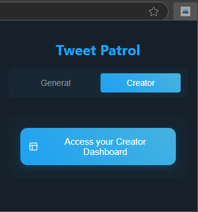
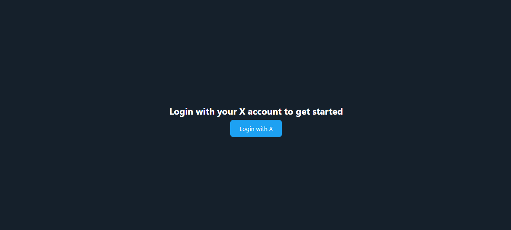
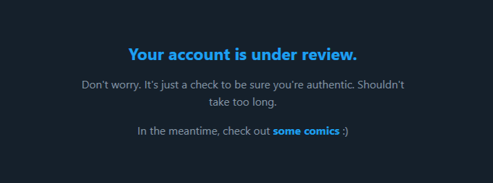
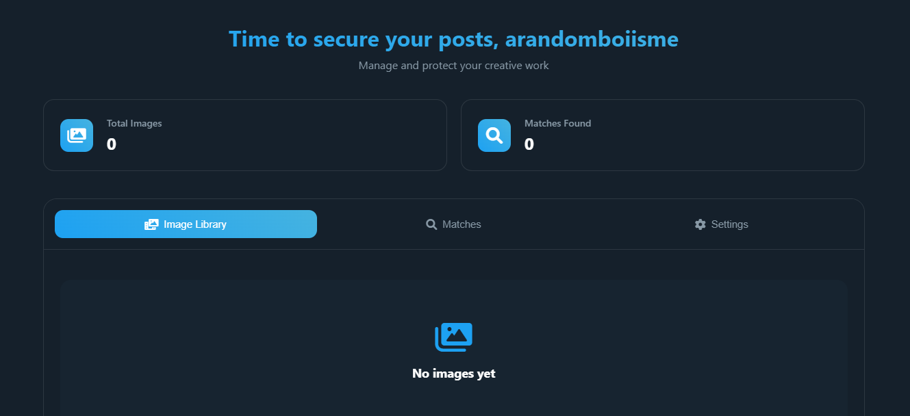
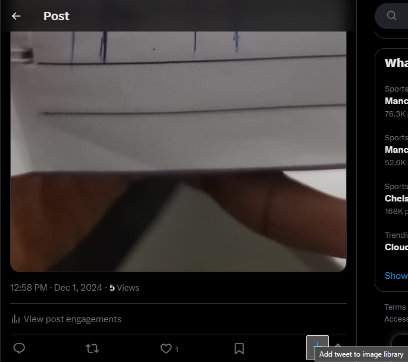
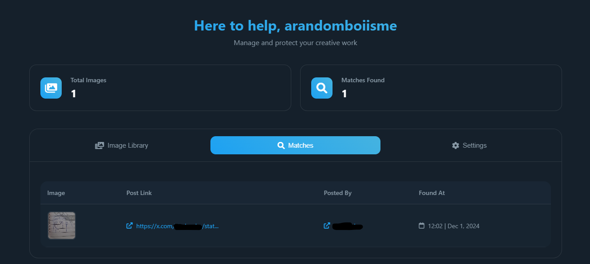
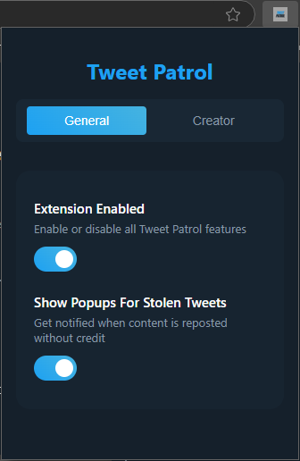
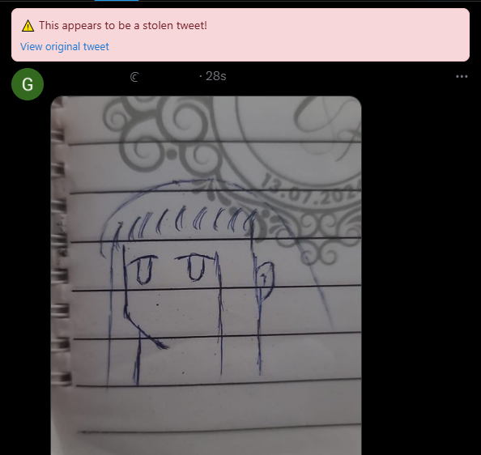

Tweet Patrol scans images on X / Twitter to find unauthorized reposts of creator content.
Are you tired of seeing others take credit for your content?
Do you want to help creators by quietly notifying them of stolen work?
Or maybe you're just looking to verify that the stunning art you found is actually
owned by the person who
posted it?
No matter your reason, Tweet Patrol is here to help!
Download it here!
From the extension page, navigate to the Creator section and click the button on the page.

Clicking the button as described will take you to a new tab, where you will be prompted to login with
your X
/ Twitter account.

On your very first login, your account will be under review for a period of time. This process shouldn't
take a noticeable amount of time.

After you pass the account review, you will be given access to your dashboard, which will be empty at
this stage. This is where you can view your added images and any potential unauthorized reposts from
other users.

After successfully passing the account review, you'll be able to add images to your dashboard directly
from your X / Twitter page.
To do this, navigate to your profile page on X / Twitter, where all your image posts will have a button attached to
them.


Clicking this button will add all images from that tweet to your image library, allowing them to be
identified by other extension users.
On your dashboard, you can check for matches to your uploaded images. These matches signify that your
image has been posted by another account.
You can also view the tweet and the account that created it.

Now you've seen how to upload your images to be tracked. But how do you help other creators? Check out
the General section to find out!
On the extension page, ensure the switch for Extension Enabled is toggled to its active state.

You can also toggle the Popups switch depending on your preference.
Simply use the site as you normally would - scrolling, liking, replyguy-ing, LARPing - and
the extension will send all images you encounter for processing.
When a creator's uploaded image has been found on another account, you will see a flag notifying you of
such.

Now you've seen how to look out for the creators on the platform, but wouldn't it be nice if people could
look out for you as well? Maybe it's a little sketch you posted some years ago, a masterpiece of a photo
you
took, or even just your friend's biology notes. Whatever it is, you can protect it all the same!
Check out the Creator section to find out how!